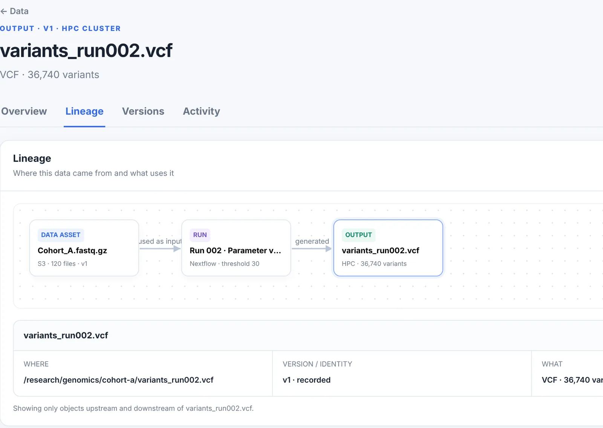
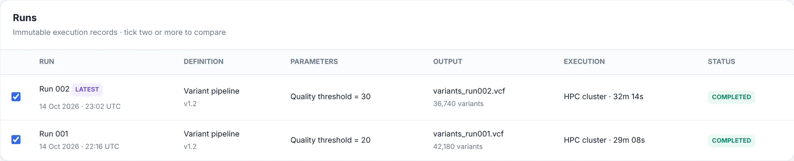
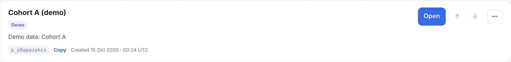
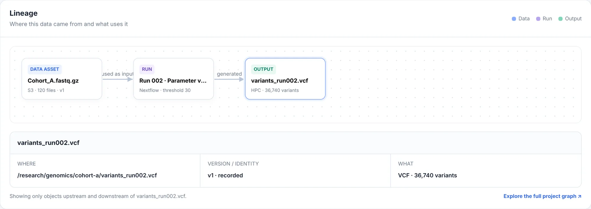
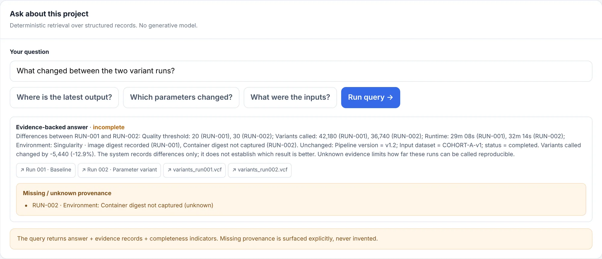

A metadata layer for scientific data
See how any result was made.
Jubilab is a local-first, self-hostable metadata layer for scientific data. It records each processing run with its inputs, parameters and versions, and shows lineage from any output back to its inputs.
Real interfaceThis is the lineage view of an output file, cropped from the running product. Cohort A is demo data.
- InputA pointer to data that stays where it is.
- RunThe processing step, with its parameter.
- OutputThe result you are looking at.

Scroll the screenshot sideways.
Every run is kept, with what went in
Each processing run is stored as an immutable record: the data that went in, the parameters, the pipeline version, where it executed and what came out. A new run never overwrites an old one.

Scroll the screenshot sideways.
- Immutable recordsThe table lists what actually happened, one row per run.
- Tick two to compareAny two or more runs can be lined up (see below).
- ParametersEach run keeps the values it was started with.
- OutputThe file each run produced, with a one-line description.
- Where it ranExecution environment and duration.
Work is split into projects
Each project keeps its own data records, workflows, runs and history. Nothing is shared between projects.

Lineage, back to the inputs and forward to what depends on them
Open any output and see the run that made it and the inputs that run used. Open an input and see every run and output that depends on it. The files stay where they are; Jubilab keeps the location, the version and a short description.

Scroll the screenshot sideways.
- InputA registered data asset: an S3 location, 120 files, version v1. A pointer, not a copy.
- RunNextflow, quality threshold 30.
- OutputThe file you opened.
- Where, which version, whatThe recorded location and identity of the file.
- Scoped viewOnly objects upstream and downstream of this file are shown.
Reading it the other way
Backward from variants_run002.vcf: it was generated by Run 002, which used Cohort_A.fastq.gz as input.
Forward from Cohort_A.fastq.gz: Run 001 and Run 002 used it, and they generated variants_run001.vcf and variants_run002.vcf.
Compare two runs and see what changed
Tick two runs and Jubilab lines up their fields. Rows that differ are highlighted and rows that match stay plain. It records the difference; it does not decide which result is better.

Scroll the screenshot sideways.
- What changedThe quality threshold, 30 against 20, and the results that followed from it.
- What did notSame pipeline version, same input dataset, same status.
- A gap, shown as a gapRun 002 has no container digest recorded. That limits how far the two runs can be called reproducible.
- Interpretation stays with youMore or fewer results does not automatically mean a better result.
Every fact carries a label
A record that looks complete can still have gaps. Jubilab marks each fact as verified, inferred, manual or unknown, so you can see what was checked and what was not. It does not imply that a run is reproducible because a record exists.
- verified
- Checked against the source, or captured directly by the tool.
- inferred
- Worked out from other records, not observed directly.
- manual
- Entered or annotated by a person.
- In the demo: the decision “Run 001 kept as baseline” is a researcher annotation.
- unknown
- The record does not say. Jubilab shows the gap instead of filling it in.
- In the demo: Run 002’s container digest was not captured.
Runs where you work, including where there is no internet
Jubilab starts with one command on your own machine or cluster. The server listens on localhost and makes no outbound network calls. No AI model is required.
$ python -m server serve --data-dir ./data jubilab: listening on http://127.0.0.1:18190 data-dir=./data $ jubilab register-run --id run-002 --name "Variant calling, threshold 30" --input fastq-v1 -p quality_threshold=30 --status completed --executor nextflow spooled register_run key=ed400327f323beb1c015acf5e7ed1297 -> jubilab-spool.p_8hakp36js1.jsonl $ jubilab sync synced 3 record(s) to http://127.0.0.1:18190/api/projects/p_8hakp36js1/ingest: applied=3 duplicate=0 error=0
- Offline firstOn a node without internet, the command-line tool writes records to a spool file. jubilab sync sends them to the server later.
- Stays on your machineThe server binds to localhost and makes no outbound network calls.
- Pointers, not dataJubilab stores where your data is and what it is, not the files themselves.
- No model neededNothing here calls an AI model.
Ask a question. Get the evidence, or “cannot determine”
Questions are answered by looking up recorded facts, not by a language model. Each answer links the records it came from and lists what is missing. If the record does not say, Jubilab says it cannot determine.

Scroll the screenshot sideways.
- A questionTyped, or picked from a short list.
- The answer, from recordsDifferences and unchanged fields, stated plainly.
- Evidence linksEach answer points at the runs and files it used.
- What is missingThe answer is marked incomplete and the gap is listed.
What it is not, and what is not there yet
Jubilab is early-stage software. Here is where its edges are today.
What it is not
- Not a workflow engine. Nextflow, your scheduler or a shell script still run the work. Jubilab records what happened.
- Not storage. It keeps pointers and context, not your files.
- Not a replacement for your tools. It sits beside them.
- Not a promise of reproducibility. It shows what was recorded and what was not.
Not there yet
- No sign-in or access control.
- No hosted service. You run it yourself.
- No storage-system connectors.
- Licence and terms: not decided yet.
- No performance figures. We have not published any.
Request early access
Jubilab is not publicly available yet. Leave an email address to be told when early access opens, and tell us what kind of data you work with.